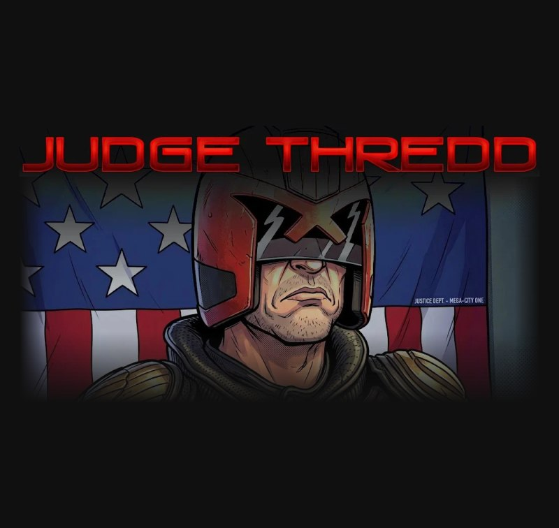
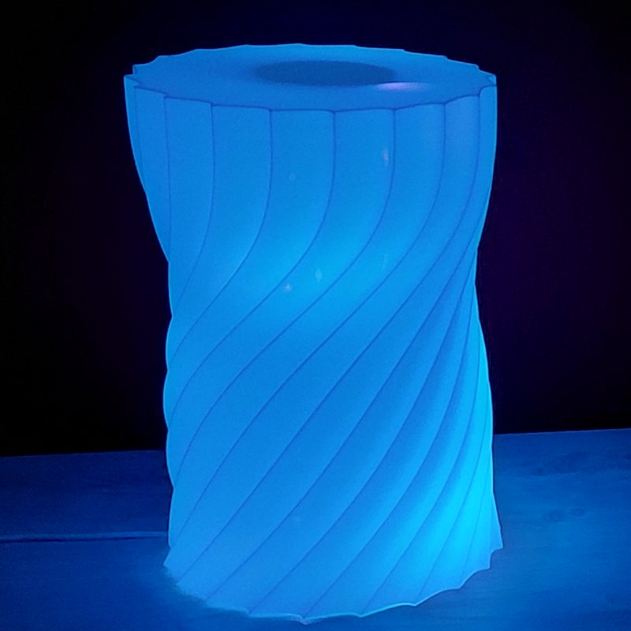
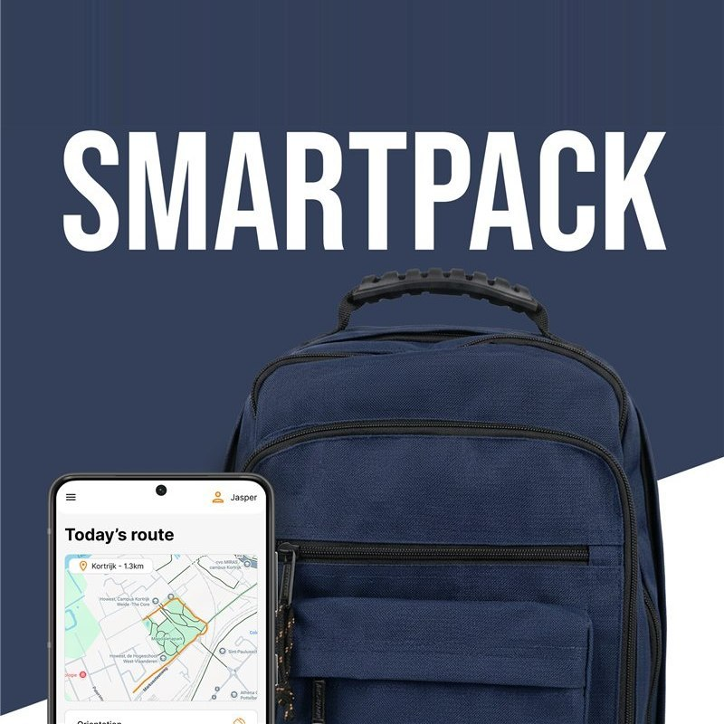
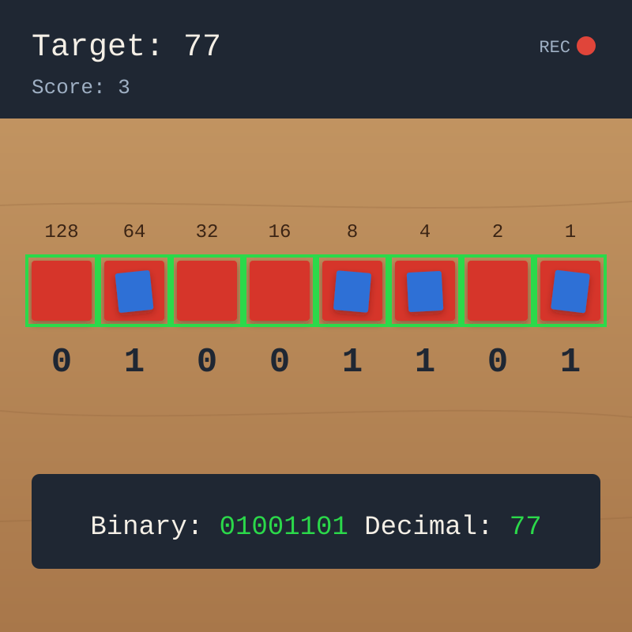
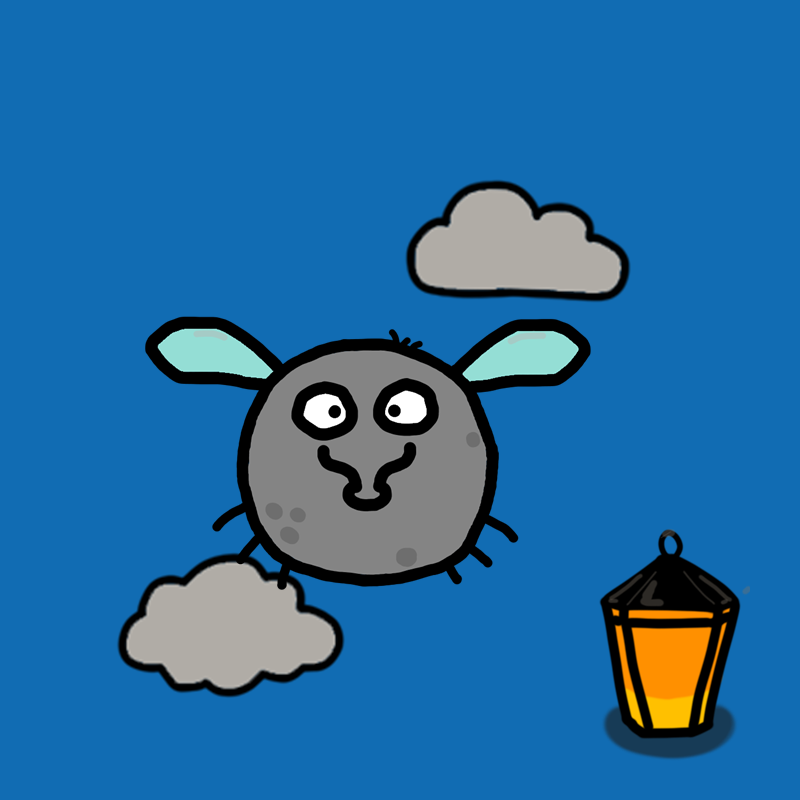

Judge Thredd
A Discord bot for the Codédex server that tracks who answers the most questions in chosen channels and rewards the top helper each week with a special role.
View on Codédex
I'm a student based in Belgium. I study Multimedia and Creative Technologies in Kortrijk.
My interests are networking, electronics, IoT and playing guitar.

A Discord bot for the Codédex server that tracks who answers the most questions in chosen channels and rewards the top helper each week with a special role.
View on Codédex
A smart lamp powered by an ESP32 Super Mini that drives a NeoPixel LED strip inside the shade. It runs WLED, so I can change colours, brightness and effects from my phone over Wi-Fi.

A backpack that checks your posture and tracks your route with GPS. Stretch sensors in the shoulder straps notice when you carry it wrong, and vibration motors warn you right away. A Raspberry Pi stores the data and serves a live web dashboard.
View on Instructables
A game that teaches binary numbers with cards on a table. A webcam spots red squares, and a blue card in a square counts as a 1. The program reads the row as a binary number, compares it with a random target and keeps score in a Tkinter window.
View on GitHub
A mobile arcade game made in Godot where you steer a fly past twigs and collect flowers for more stamina. I added the parallax background, saving of the high score, the game over screen and the lamp.
View on GitHubThe easiest way to reach me is by email: jasper.de.jonghe.07@gmail.com
You can also find me on LinkedIn.